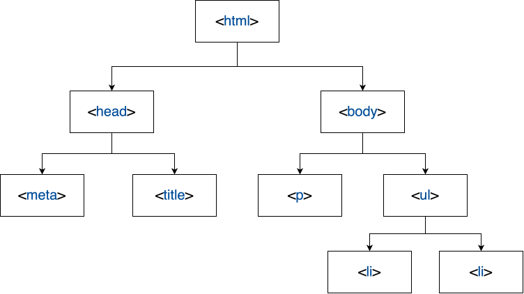

Welcome to Web Magic! ✨
Presented by: Alex Lavaee
Speaker Bio
- Data Science @ BU
- Previously: Software Engineer Intern @ Microsoft
- 7-time Intern as Software Engineer, Data Scientist, Machine Learning Engineer
Today's Adventure 🗺️
- The Building Blocks: HTML 🧱
- Adding Style: CSS 🎨
- Bringing Pages to Life: JavaScript 🚀
- Crafting Your Own Interactive Webpage 💻
- Resources & Next Steps 📚
What is Web Development? 🌐
Web Development = Digital Magic
- HTML: The spells that build the structure. 📜
- CSS: The enchantments that beautify. 🎭
- JavaScript: The potions that add life. 🧪
The Web's Secret Language - HTML 🔍
HTML: HyperText Markup Language
The web's foundational language.
<!DOCTYPE html>
<html>
<head>
<title>My Magical Webpage</title>
</head>
<body>
<h1>Welcome to my site!</h1>
<p>This is where the magic happens.</p>
</body>
</html>
HTML Tags & Elements
An HTML element is defined by a start tag, some content, and an end tag.
Heading Tag
<h4>Hello World 👋🏼</h4>
Hello World 👋🏼
Paragraph Tag
<p>This is a paragraph of text.</p>
This is a paragraph of text.
Image Tag
<img src="image.jpg" alt="Description of image">

List Tags
<ul>
<li>Item 1</li>
<li>Item 2</li>
</ul>
- Item 1
- Item 2
HTML Attributes: Adding Superpowers to Elements
Attributes provide additional information (metadata) about elements.
They always come in name/value pairs like:
name="value"
<a href="https://www.example.com">Visit Example.com</a>
<img src="image.jpg" alt="A magical wizard's hat">
<input type="text" placeholder="Enter your spell here">
The Document Object Model (DOM)
The DOM is a programming interface for HTML.
Represents the page so programs can change the document structure, style, and content.
With JavaScript, you can manipulate the DOM to make dynamic webpages.
<!DOCTYPE html>
<html>
<head>
<meta charset="UTF-8">
<title>Page Title</title>
</head>
<body>
<p>This is a paragraph.</p>
<ul>
<li>List item 1</li>
<li>List item 2</li>
</ul>
</body>
</html>

Styling with CSS - Adding Colors to Your World 🌈
CSS: Cascading Style Sheets
body {
background-color: #f0f0f0;
font-family: 'Arial', sans-serif;
}
h1 {
color: #333;
text-shadow: 2px 2px 4px rgba(0,0,0,0.1);
}
p {
color: #666;
line-height: 1.6;
}
How to Include CSS
-
Inline Styles: Using the
styleattribute -
Internal Stylesheet: Using the
<style>tag in the<head> - External Stylesheet: Linking a .css file
<p style="color: blue;">This is a blue paragraph.</p>
<head>
<style>
p { color: blue; }
</style>
</head>
<head>
<link rel="stylesheet" href="styles.css">
</head>
CSS Selectors & Properties
- Element Selector: Selects all elements of a type
p {
color: red;
}
.myClass {
font-size: 20px;
}
#myId {
background-color: yellow;
}
Essential CSS Techniques
Here are 20 commonly used CSS techniques every web developer should know:
1. Flexbox Layout
.flex-container {
display: flex;
justify-content: space-between;
align-items: center;
}
2. CSS Grid
.grid-container {
display: grid;
grid-template-columns: repeat(3, 1fr);
gap: 10px;
}
3. Responsive Design with Media Queries
@media screen and (max-width: 600px) {
.column {
width: 100%;
}
}
Resize the browser to see the effect (not visible in this presentation).
4. CSS Variables (Custom Properties)
:root {
--main-color: #89b4fa;
}
.button {
background-color: var(--main-color);
}
5. Transitions and Animations
.button {
transition: background-color 0.3s ease;
}
.button:hover {
background-color: #cba6f7;
}
Hover effect not visible in this presentation.
6. Box Sizing
* {
box-sizing: border-box;
}
Content stays within the box
7. Pseudo-classes and Pseudo-elements
a:hover {
color: #f38ba8;
}
p::first-letter {
font-size: 2em;
color: #cba6f7;
}
Hover effect not visible in this presentation.
Hover over meLarge first letter
8. CSS Positioning
.relative {
position: relative;
top: 20px;
left: 20px;
}
.absolute {
position: absolute;
top: 0;
right: 0;
}
9. Flexbox Centering
.center-content {
display: flex;
justify-content: center;
align-items: center;
height: 100px;
}
10. CSS Reset/Normalize
* {
margin: 0;
padding: 0;
box-sizing: border-box;
}
Ensures consistent styling across browsers
11. Custom Fonts
@font-face {
font-family: 'CustomFont';
src: url('path/to/font.woff2') format('woff2');
}
body {
font-family: 'CustomFont', sans-serif;
}
This text uses a custom font (simulated)
12. Text Shadow
.shadow-text {
text-shadow: 2px 2px 4px rgba(0,0,0,0.5);
}
Shadowed Text
13. Gradient Background
.gradient-bg {
background: linear-gradient(45deg, #89b4fa, #cba6f7);
}
14. Box Shadow
.shadow-box {
box-shadow: 0 4px 8px rgba(0,0,0,0.1);
}
15. Text Overflow
.ellipsis {
white-space: nowrap;
overflow: hidden;
text-overflow: ellipsis;
}
16. Sticky Positioning
.sticky {
position: sticky;
top: 0;
}
Scroll to see the sticky effect (not shown in this demo)
17. CSS Columns
.multi-column {
column-count: 3;
column-gap: 20px;
}
18. CSS Filters
.blur-effect {
filter: blur(5px);
}
19. CSS Transform
.rotate {
transform: rotate(45deg);
}
20. Viewport Units
.full-height {
height: 100vh;
}
100vh = 100% of the viewport height
Introducing JavaScript - The Web's Wizardry 🪄
JavaScript: The Magic Wand
function greet() {
let name = prompt("What's your name, young wizard?");
alert(\`Welcome to Web Magic, \${name}! ✨\`);
}
document.querySelector('button').addEventListener('click', greet);
Adding JavaScript to Your Page
-
Inline JavaScript: Using the
<script>tag - External JavaScript: Linking a .js file
<body>
<script>
alert('Hello, World!');
</script>
</body>
<head>
<script src="script.js"></script>
</head>
JavaScript Basics: Variables & Functions
Variables store data values.
let message = 'Hello, World!';
const pi = 3.1416;
Functions perform actions.
function greet(name) {
console.log('Hello, ' + name + '!');
}
Interacting with the DOM
Use JavaScript to change HTML content.
document.getElementById('myElement').innerHTML = 'New Content!';
Respond to events:
class="fragment"
document.getElementById('myButton').addEventListener('click', function() {
alert('Button clicked!');
});
Resources for Aspiring Web Wizards 📚
- HTML Tutorial on W3Schools - Learn HTML basics 📖
- CSS Tutorial on W3Schools - Master CSS styles 🎨
- JavaScript Tutorial on W3Schools - Dive into JavaScript
- MDN Web Docs - Comprehensive web documentation 🏛️
- CodePen - Experiment and share your code 🎠
Bonus: React ⚛️
React is a JavaScript library for building user interfaces.
- Created by Meta.
- Makes it easier to build interactive UIs by packaging reusable HTML and JavaScript code into constructs called components.
- Uses components to build encapsulated elements.
Learn more at reactjs.org
Thank You, Web Wizards! 🎉
You've Unlocked the Basics of Web Development!
Stay Curious. Keep Coding. 🚀